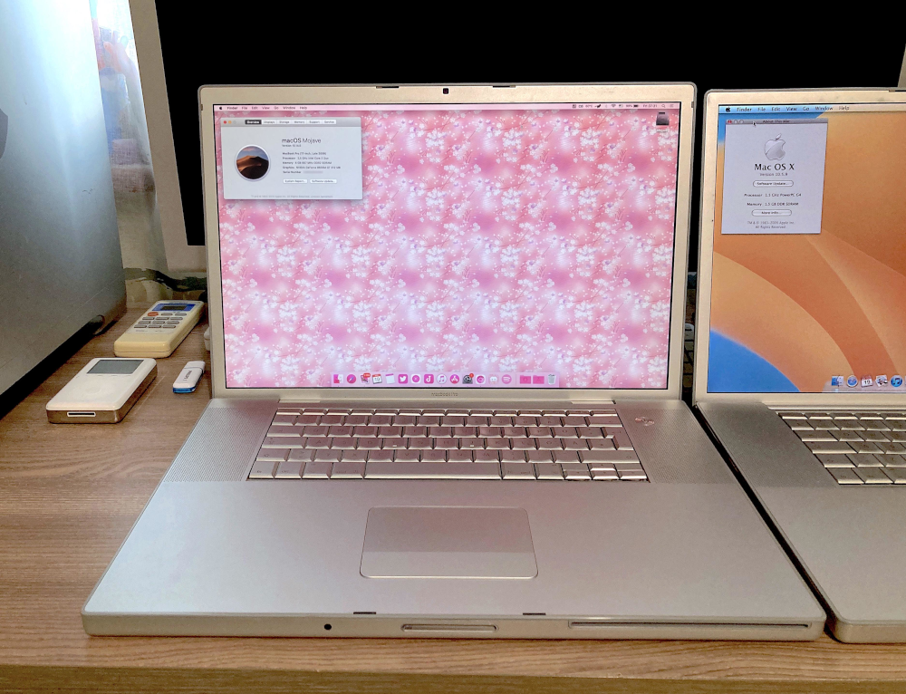

|  | CPU: 2.5 GHz Intel Core 2 Duo T9300Memory: 4 GB DDR2 RAMStorage: 256 GB SSDGPU: NVIDIA GeForce 8600M GT with 512 MB of VRAMOS: Mac OS MojaveCondition: Works perfectly |
I've been searching for this model for months at this point, after my last one couldn't get repaired. I kinda gave up searching locally so I turned to eBay. A bit of browsing later I found a not-so-promising but cheap one for parts that was listed as not working for only 30 euros. I knew it was a huge risk but I ordered it. After a month it arrived. Turning it on I got a chime and a white screen with nothing else. Good sign! If I was lucky it was just the GPU as expected. I gave it for repairs to a friend of mine but he couldn't find a replacement GPU. All he had were ones that could address only half of the VRAM because they were 64-bit and not 128. More months passed and finally in April of 2024 he finally got the chip and called me, saying it was fixed. I went to test it with him and it booted! But it wouldn't recognise any HDD we put in it... uh oh. We tried like 5 different drives and it wouldn't see them for some reason. I got worried. After that he gave me a really good SSD and without much hope I tried it and... it worked!! Next was the RAM, it only works with PC2-5300 and refuses to boot with anything faster. Wow, pickiest machine I've ever used. I went and bought 4 GB of RAM for it and an SSD, trying them beforehand to make sure they worked.
I was thinking I was done with this machine but I quickly noticed after using it for a little bit that the fans were constantly running at full blast, even though the CPU or GPU were not getting hot at all. Thankfully, that was a quick fix as one of the tiny cables on the logic board next to the left fan wasn't plugged in. After fixing that, it now works wonderfully!